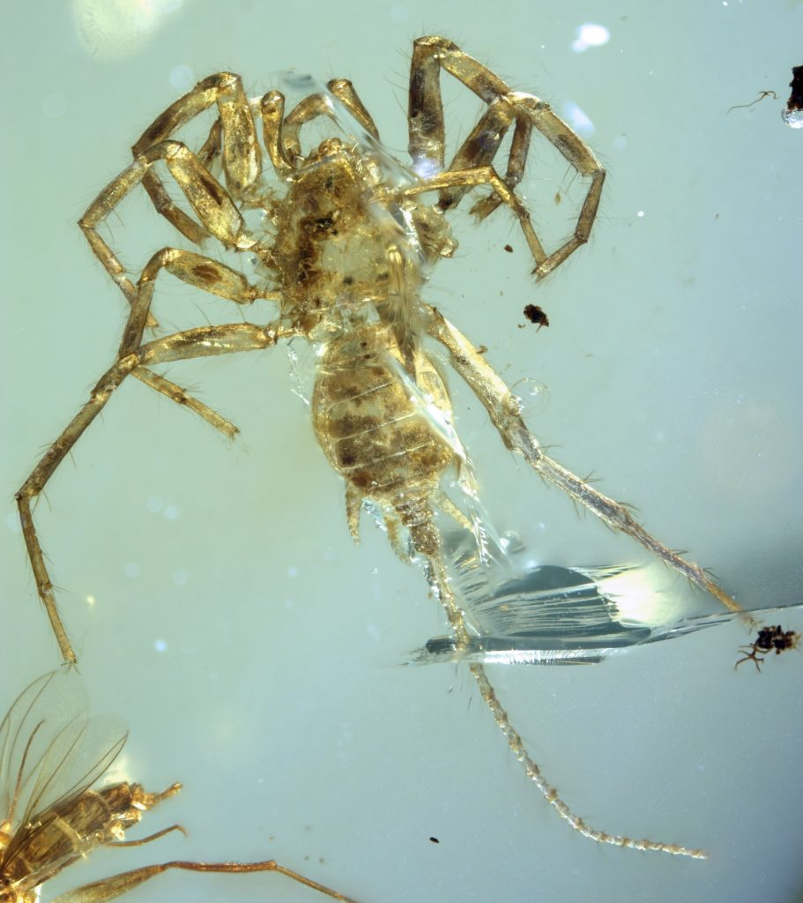

ဒီပင့်ကူဟာ အရာခ်နစ် (Arachnids) လို့ခေါ်တဲ့ မျိုးနွယ်ထဲမှာ ပါဝင်ပါတယ်။ ဒီမျိုးနွယ်မှာ အခုခေတ် ပင့်ကူတွေ၊ ကင်းမြှီးကောက်တွေနဲ့ အခြား အလားတူ အကောင်တွေ ပါဝင်ပါတယ်။ ပညာရှင်တွေကတော့ ဒီအမြှီးပါတဲ့ ပင့်ကူဟာ အခုထက်ထိ အရှေ့တောင် အာရှက မုတ်သုန်တော တွေထဲမှာ သက်ရှိထင်ရှား ရှိနေကောင်း နေနိုင်သေးပေမယ် ဒီလို အသက်ထင်ရှား ရှိနေဖို့ဆိုတာ အလွန်တော့ ခဲယဉ်းပါတယ်လို့ ပြောပါတယ်။ ကင်းဆတ်တက္ကသိုလ်က ပညာရှင် ဒေါက်တာ ပေါလ်ဆယ်လ်ဒန်ကတော့ ပင့်ကူဟာ အရွယ်အစား အလွန်သေးငယ်တဲ့ အတွက် ဒီပင့်ကူကနေ ဆင်းသက်လာတဲ့ မျိုးဆက်တွေဟာ မြန်မာပြည်က မုတ်သုန်တောတွေထဲမှာ ရှင်သန် နေနိုင်သေးတယ်လို့ ပြောပါတယ်။
“ဒီပင့်ကူက သေးသေးလေးလေ။ ပြီးတော့ သူ့ကိုတွေ့ရှိခဲ့တဲ့ မုန်သုန်တော တွေကလဲ ဘယ်သူမှ သေချာ ရှာဖွေလေ့လာ ရသေးတာ မဟုတ်ဘူး။ အဲဒီတော့ မတွေ့သေးတာလဲ ဖြစ်နိုင်တယ်” လို့ သူကပြောပါတယ်။
လွန်ခဲ့တဲ့ နှစ်တွေအတွင်းကလဲ အရင်က မတွေ့ဖူးခဲ့တဲ့ ရှေးဟောင်း ကျောက်ဖြစ် ရုပ်ကြွင်း အမြောက်အများကို မြန်မာပြည် ဟူးကောင်းဒေသက ထွက်တဲ့ ပယင်းကျောက် တွေထဲမှာ တွေ့ရှိခဲ့ပါတယ်။ ပညာရှင်တွေကတော့ ဒီဒေသကို ကျောက်ဖြစ်ရုပ်ကြွင်း ရတနာ သိုက်ကြီးလို့တောင် ခေါ်ဆိုကြပါတယ်။
ဒီပင့်ကူဟာ လွန်ခဲ့တဲ နှစ်သန်း ၁၀၀ လောက်က ခရိတေးရှပ်စ် ကာလက (Cretaceous period) အသက်ရှင် နေထိုင်ခဲ့တာ ဖြစ်ပါတယ်။ ဂျူရားစစ်ခ်ပါခ် (Jurassic Park) ရုပ်ရှင်ထဲက အသားစား တီရက်စ် (Tyrannosaurus Rex) တွေရှင်သန်ခဲ့တဲ့ ကာလပဲ ဖြစ်ပါတယ်။ ဒီပင့်ကူရဲ့ ထူးခြား ချက်ကတော့ ရှေးဟောင်ပင့်ကူတွေရဲ့ လက္ခဏာတွေနဲ့ ခေတ်သစ် ပင့်ကူတွေရဲ့ လက္ခဏာတွေ ရောထွေးပါဝင် နေတာပဲ ဖြစ်ပါတယ်။
သိပ္ပံပညာရှင်များက အခုတွေ့ရှိတဲ့ ပင့်ကူကို Chimerarachne yingi လို့အမည်ပေးထားပါတယ်။ ခိုင်မယ်ရာ (chimera) ဆိုတာကတော့ ရှေးဟောင်း ဂရိဒန္ဓာရီတွေမှာ ပါတဲ့ သတ္တဝါပေါင်းစုံရဲ့ ကိုယ်ခန္ဓာ အစိတ်အပိုင်းတွေ ပေါင်းစပ်ပါဝင်တဲ့ အကောင်ပဲ ဖြစ်ပါတယ်။ မြန်မာပြည်က မနုဿီဟလို အကောင်မျိုးပေါ့။ မြန်မာပညာရှင်တွေ ရှာတွေ့တာဆိုရင်တော့ မနုဿီဟပင့်ကူလို့ အမည်ပေးကြမယ်ထင်တယ်။
“ခေတ်သစ်ပင့်ကူတွေဟာ လွန်ခဲ့တဲ့ နှစ်သန်း ၃၅၀ လောက်တုန်းက အမြှီးပါတဲ့ ရှေးဟောင်း ပင့်ကူတွေကနေ ဆင်းသက်လာတာလို့ ကျွန်တော်တို့ ယုံကြည်ခဲ့တာ ကြာပါပြီ။ ဒါပေမယ် သက်သေပြစရာ ကျောက်ဖြစ်ရုပ်ကြွင်း ရှာမတွေ့ခဲ့ပါဘူး။ အခုတော့ ရှာတွေ့ပါပြီ။ အခုရှာဖွေ တွေ့ရှိမှုဟာ အလွန်အရေးပါတဲ့ တွေ့ရှိမှုပါ” လို့ မန်ချက်စတာ တက္ကသိုလ်က ပညာရှင် ဒေါက်တာ ရပ်ဆဲလ်ဂါးဝုဒ်က ပြောပါတယ်။

အောက်စဖို့တ် တက္ကသိုလ် သဘာဝသမိုင်းပြတိုက်က ပညာရှင် ဒေါက်တာ ရီကာဒိုဖွန်တေး ကလဲ ဒီတွေ့ရှိမှုဟာ ပင့်ကူတွေရဲ့ ဆင့်ကဲဖြစ်စဉ် (evolution) နဲ့ပတ်သက်ပြီး ပျောက်ဆုံးနေတဲ့ ကွင်းဆက်တစ်ခု ဖြစ်တယ်လို့ ပြောပါတယ်။
“ဒီ ခိုင်မဲရာရခ်နီ ပင့်ကူဟာ ပေလေယိုဇိုးယစ် (Palaeozoic) ခေတ်က အမြှီးပါတဲ့ ရှေးဟောင်ပင့်ကူတွေနဲ့ ခေတ်သစ်ပင့်ကူတွေကြားက ပျောက်ဆုံးနေတဲ့ ကွင်းဆက်ကို ဖေါ်ပေးလိုက်တာပါပဲ။ ဒီပင့်ကူရုပ်ကြွင်းကို မြန်မာပြည်က ပယင်းကျောက်ထဲမှာ အကောင်းပကတိ တွေ့ရတဲအတွက် ပညာရှင်တွေ အသေးစိတ် လေ့လာခွင့် ရကြပါတယ်။”
ပင့်ကူတွေဟာ အခုဆို သက်တမ်း နှစ်သန်း ၃၀၀ ရှိပါပြီ။ အခုတွေ့ရတဲ့ ပင့်ကူဟာ ခေတ်သစ် ပင့်ကူတွေနဲ့ မျိုးနွယ်တူပြီး ခေတ်သစ်ပင့်ကူ တွေထဲက သက်တမ်း အရင့်ဆုံးဖြစ်တဲ့ မီဆိုသီးလီး (mesotheles) ပင့်ကူတွေနဲ့ အတော်ကို ဆင်ပါတယ်။ ဒီပင့်ကူဟာ ခေတ်သစ်ပင့်ကူတွေနဲ့အတူ လွန်ခဲ့တဲ့ နှစ်သန်း ၂၀၀ လောက်တုန်းက အသက်ရှင် နေထိုင်ခဲ့ဟန် တူပါတယ်။ အရင်ကတော့ နှစ်သန်း ၂၉၅ သန်းထက် ပိုနုတဲ့ ရုပ်ကြွင်း မတွေ့ခဲ့ဖူးပါဘူး လို့ ဒေါက်တာဂါးဝုဒ်က ပြောပါတယ်။
ပင့်ကူတွေဟာ အလွန်ရှေးကျတဲ့ ရှေးဟောင်းပင်ကူ တွေကနေ ဆင်းသက်လာတာ ဖြစ်ပြီး လွန်ခဲ့တဲ့ နှစ် သန်း ၁၀၀ လောက်အတွင်းမှာ အဆိပ်နဲ့ ပင့်ကူအိမ် ယက်နိုင်တဲ့ စွမ်းရည်တွေ ဆင့်ကဲ ရရှိလာခဲ့ပါတယ်။ လက်ရှိမှာ ပင့်ကူမျိုးစိတ်ပေါင်း ၄၇,၀၀၀ ကျော် အသက်ရှင်သန် နေထိုင်လျက် ရှိပါတယ်။
အခုတွေ့ရှိချက်ကို Nature Ecology & Evolution ဂျာနယ်မှာ ဆောင်းပါးနှစ်စောင်ခွဲပြီး တင်ပြခဲ့တာပါ။ ပထမ ဆောင်းပါးက တရုတ်အမျိုးသား သိပ္ပံအကယ်ဒမီက ပညာရှင် ဘိုဝမ် နဲ့အဖွဲ့က ရုပ်ကြွင်းနှစ်ကောင်နဲ့ ပါတ်သက်လို့ တင်ပြခဲ့တာဖြစ်ပြီး နောက်ဆောင်းပါးကတော့ ဟားဗတ် တက္ကသိုလ်က ဂွန်ဇာလာ ဂီရီဘတ် နဲ့အဖွဲ့က နောက်ရုပ်ကြွင်း နှစ်ကောင်နဲ့ ပါတ်သက်လို့ လေ့လာ တွေ့ရှိချက်တွေကို တင်ပြခဲ့တာ ဖြစ်ပါတယ်။
Source: BBC |’Extraordinary’ fossil sheds light on origins of spiders